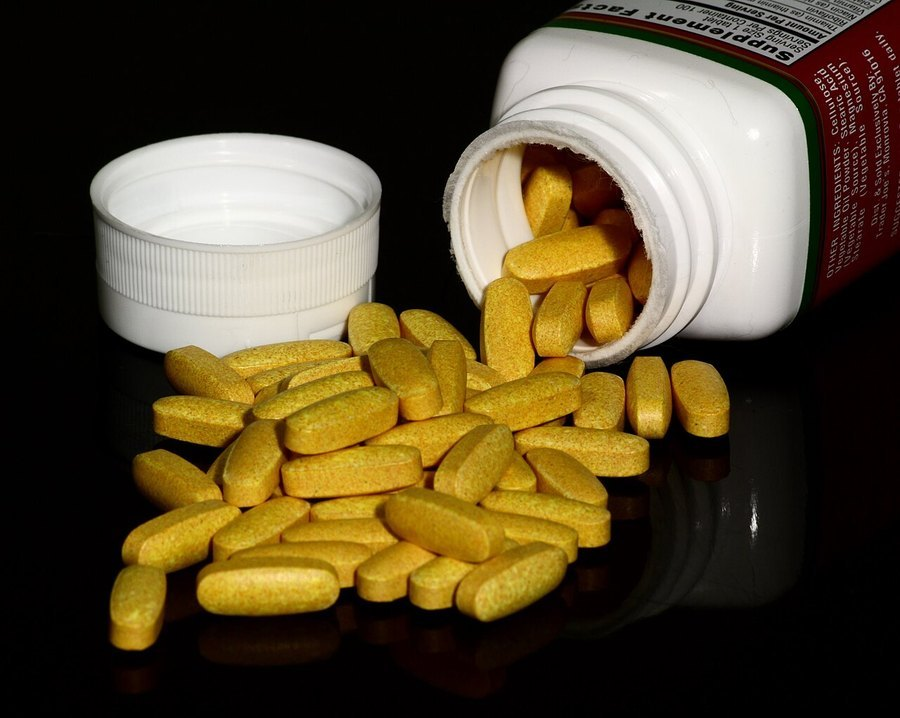

Taurine and Brain Aging: What New Research Suggests
A well-known amino acid found in energy drinks is now being studied as a driver of aging itself. Here's what the science actually supports, and what's still speculation.

Key takeaways
- Taurine levels appear to fall with normal aging in several species, including humans, based on blood-marker studies.
- A 2023 study in the journal Science found that restoring taurine improved several markers of healthy aging in mice and, to a lesser degree, in monkeys.
- Those studies measured physical aging markers: bone density, muscle mass, metabolic and immune function, not memory or cognition directly.
- Human trials on taurine and brain aging are still early. Nothing yet confirms a cognitive benefit from supplementing.
- Taurine is generally well tolerated at commonly used doses, but talk to a doctor before adding it long term.
Taurine and brain aging is a pairing that jumped from a fairly obscure amino acid to supplement-aisle buzzword in the space of a couple of years. The honest, current answer is that taurine has real, interesting research behind it as a general marker of aging, but the leap to "taurine keeps your brain young" gets ahead of what's actually been tested. Here's what the evidence supports, and where it stops.
What is taurine, and why is it suddenly a big deal?
Taurine is an amino acid the body makes on its own and also gets from food, mainly meat, fish and dairy. It's long been added to energy drinks, where it shows up at doses around 1,000 mg per serving, and it plays roles in bile acid formation, cell hydration and nervous-system function. For decades it sat quietly in the background of nutrition science.
That changed with a widely covered study published in the journal Science in 2023. Researchers found that circulating taurine levels decline with normal aging across several species, including mice, monkeys and humans, and that restoring taurine levels in mice extended lifespan and improved a range of aging markers. A similar, shorter trial in middle-aged monkeys showed some comparable improvements. It was a genuinely notable finding, and supplement marketing moved on it fast.
Does taurine actually slow brain aging?
This is where the claims outrun the data. The 2023 study and the animal research that followed it focused mainly on physical markers of aging: bone density, muscle strength, pancreatic and immune function, and measures of cellular stress. Cognitive or memory-specific outcomes were not the centerpiece of that work. So while taurine looks like a genuinely interesting marker of biological aging generally, the specific claim that it protects memory or slows brain aging has not been directly tested the way, say, exercise or sleep have been.
That doesn't mean there's nothing there. Taurine is present in high concentrations in brain tissue and has known roles in calming neural excitability and supporting cell health, which is a reasonable basis for researchers to look at cognition next. It just hasn't happened yet, at least not in a large, well-designed human trial.
Is there any human evidence at all?
Some. Observational research has linked lower taurine levels to several age-related conditions, and small human studies have looked at taurine for things like exercise performance, blood pressure and metabolic markers, with mixed results depending on dose and population. Direct human trials measuring memory, attention or dementia risk after taurine supplementation are essentially absent right now. Researchers involved in the original aging work have said as much publicly: the mouse and monkey findings are a strong reason to study humans further, not proof that supplementation works in people.
That's a normal, early stage for a promising finding. Citicoline and bacopa monnieri, two of the better-studied ingredients for memory, took years of human trials to build their current evidence base. Taurine is roughly where those ingredients were before that work existed.
COMPLEX
The memory formula we rate highest in 2026
If memory support is the actual goal, look at ingredients with direct cognitive trials behind them. Advanced Memory Complex combines citicoline, bacopa, phosphatidylserine and B-vitamins in a transparent, clinically-dosed label with a 60-day guarantee.
See Today's Price →Should you take a taurine supplement for brain aging?
If general healthy aging interests you and you already eat little meat or fish, a modest taurine supplement is a reasonable, low-risk thing to discuss with a doctor. If your specific goal is protecting memory, the current evidence doesn't single taurine out over the basics that are already well established: sleep, exercise, a good diet and managing stress and blood sugar. Our guide to how to improve your memory covers the habits with the strongest track record.
It's also worth separating the hype cycle from the science. A single strong animal study, even one published in a top journal, is a starting point for research, not a finished product recommendation. Watch for human cognitive trials over the next few years before treating taurine as an established brain-aging tool.
What about safety and dosage?
Taurine has decades of use in energy drinks and sports supplements without major red flags at commonly used amounts, generally in the 500 mg to 2,000 mg per day range in research settings. That track record is reassuring but not the same as long-term safety data for the specific purpose of slowing aging, which hasn't been studied over years in people. Anyone with kidney or liver issues, anyone pregnant or breastfeeding, and anyone on prescription medication should check with a doctor before adding a daily supplement, since individual health conditions can change how any nutrient is processed.
The bottom line
Taurine and brain aging is a real research area worth watching, not a settled case. The 2023 findings on physical aging markers were strong enough to justify serious follow-up work, and that work is underway. Until human cognitive trials exist, treat brain-specific claims about taurine as promising rather than proven, and lean on the supplements and habits that already have that direct evidence, including the ingredients covered in our guide to the best vitamins and nutrients for brain fog.
Frequently asked questions
Does taurine really slow brain aging?
The strongest evidence comes from animal studies, where taurine levels fall with age and supplementation improved several aging markers. Those studies looked mostly at physical measures, not memory directly, so a specific brain-aging benefit in humans isn't established yet.
Why did taurine suddenly become popular for aging?
A widely covered 2023 study in the journal Science found taurine declines with age across species and that restoring it improved aging markers in mice and monkeys. Supplement marketing moved on the idea quickly, ahead of confirming human data.
Is taurine safe to take as a supplement?
It has a long history of use in energy drinks and sports supplements at commonly used doses and appears generally well tolerated. Long-term safety data for aging specifically is limited, so check with a doctor if you have kidney or liver issues or take other medication.
What's a typical taurine dosage?
Common supplement doses run about 500 mg to 2,000 mg per day, similar to sports-nutrition research amounts, but there's no established dose for brain aging specifically. Check the label for the actual disclosed amount.
Want ingredients with real cognitive trials behind them?
Skip the guesswork. See the memory formulas our editors rate highest for 2026.
See the Top 5 Memory Formulas →Related: Creatine for brain health · Best vitamins for brain fog · How to improve your memory · Best memory formulas of 2026